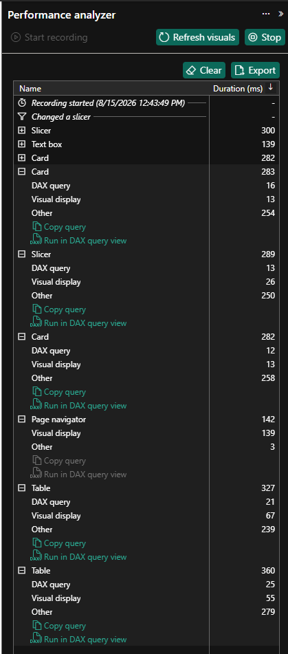

What you will produce
- Performance Analyzer baseline
- Model reduction plan
- DAX optimization
- Before/after performance evidence
Step-by-step walkthrough
- Continue from your Lab 04 report.
- Open Power BI Desktop.
- Open the same Power BI file you completed through Lab 04, from
pbi-local\or your saved workshop solution folder. Keep working in that same file; do not start a new one. - Go to a report page with several visuals and slicers, such as the
Executive OvervieworSales & Margin Analysispage you built in Lab 04.
- Capture a baseline with Performance Analyzer.
- On the View ribbon, click Performance Analyzer to open the pane.
- In the Performance Analyzer pane, click Start recording.
- Click Refresh visuals so every visual on the page reruns once from the same starting point.
- Repeat one or two realistic user actions, such as changing a slicer or opening the drillthrough path you want to test.
- Expand the slowest visuals in the pane and note the DAX query, Visual display, and Other times in milliseconds.

Performance Analyzer pane showing DAX query vs. visual display timings. FYI — what Performance Analyzer is really timing.
DAX query is the time spent asking the semantic model for data, Visual display is the time spent drawing the chart or table, and Other usually captures framework overhead such as waiting for dependent visuals or interactions. That split matters because a slowFactSalesquery calls for model/DAX work, while a slow display time often points to an overly dense visual instead. - Record the baseline evidence before changing anything.
Use the same page interaction for every comparison so your before/after numbers are valid. Capture at least the slowest visual and one additional representative visual, then use the checklist below as your performance notes template.
Evidence item Where to capture What to record Outcome Baseline timings Performance Analyzer Visual name, DAX time, display time, other time One optimization candidate selected. Before/after benchmark Performance notes Baseline, single change, after result, tradeoff, remaining risk Improvement claims are evidence-based. Visual inventory Report page Visual count, high-cardinality visuals, custom visuals, cross-highlighting Low-value overhead identified. Model review Model/Data view Unused columns, high-cardinality fields, date/time fields, precision Reduction plan documented. DAX review Measure editor Before/after measure logic Variables or branching added. Refresh review Power Query/Service notes Staging, early filters, removed columns, folding status, RangeStart, RangeEnd Incremental refresh readiness documented. Aggregation design Model notes Summary grain, group-by columns, Import/DirectQuery/hybrid tradeoffs Aggregation hit requirements documented. Capacity/external tools Validation notes DAX Studio, VertiPaq Analyzer, capacity metrics, admin monitoring status Verify for Gov items are labeled. - Review visual complexity on the tested page.
- Count the visuals on the page.
- Select each visual and note whether it duplicates information, uses a high-cardinality field on an axis, or relies on a custom/imported visual.
- On the Format ribbon, click Edit interactions and note any cross-filter or cross-highlight behavior that does not help the user's task.
- Write down at least one candidate visual to remove, merge, or simplify.
FYI — why visual interactions can make a fast page feel slow.
Every cross-filter or cross-highlight can force multiple visuals to rerun after a single click. On a busyExecutive OvervieworSales & Margin Analysispage, turning off one low-value interaction can remove several unnecessary queries and make slicers feel much more responsive. - Review model size and cardinality.
- Switch to Model view and inspect the fact and dimension tables used by the page.
- Look for columns that are not used in relationships, measures, slicers, or visuals.
- Flag high-cardinality text fields, numeric columns with excessive decimal precision, and date/time columns that could be simplified to Date-only.
- If you decide to remove fields, plan to remove them in Power Query rather than only hiding them in the model.
FYI — why cardinality and data types drive model size.
VertiPaq compresses repeating values extremely well, but high-cardinality text columns, overly precise decimals, and unused date/time timestamps reduce that compression and increase memory scans. Removing an unused column from Power Query helps because the column never reaches the model at all; hiding it in Model view only hides it from authors, not from storage. - Rewrite one measure with variables or measure branching.
- Identify a measure that repeats the same expression or uses broad filter removal such as
ALLunnecessarily. - Copy the original DAX into your notes or keep the answer key below visible for reference.
- On the Home or Modeling ribbon, click New measure, then rewrite the logic with
VARandRETURN, branching from existing base measures where possible. - Place the original and rewritten measures in the same test visual and confirm they return the same results before replacing the original.
FYI — why
VARand measure branching help performance.When a measure repeats the same logic several times, Power BI may need to evaluate that expression repeatedly in each filter context. Storing intermediate results inVARvalues and reusing base measures like[Sales Amount]and[Target Sales Amount]makes the intent clearer, reduces duplicated work, and makes future fixes flow through every dependent measure. - Identify a measure that repeats the same expression or uses broad filter removal such as
- Apply one visual-level optimization.
- Remove or merge at least one low-value visual identified earlier.
- If a dense table can be summarized safely, replace it with a higher-level visual or fewer displayed fields.
- If an interaction is unnecessary, select the source visual, click Format > Edit interactions, then click None on the target visual.
- Repeat the same slicer or refresh interaction you used for the baseline and capture the new timings.
- Review aggregation design.
Define a candidate summary grain, such as Month + Product Category + Territory with summed Sales Amount and Gross Margin. Document whether
FactSaleswould remain Import, move to DirectQuery, or be paired with an Import aggregation and a detail-level DirectQuery or hybrid table, and note what source, gateway, and aggregation-hit validation would still be required.FYI — why aggregation tables speed up large models.
A summary table at Month + Product Category + Territory has far fewer rows than detail-levelFactSales, so high-level visuals can answer from that smaller Import table instead of scanning every transaction. The optimization only works when the visual's group-by columns and measures match the aggregation design closely enough for Power BI to hit the summarized table. - Review Power Query and incremental refresh readiness.
- On the Home ribbon, click Transform data to open Power Query.
- Check the fact query first and confirm filters and column removals happen as early as practical.
- If the source supports folding, review the Applied Steps pane and folding indicators to make sure later transformations have not broken folding unnecessarily.
- Confirm whether
RangeStartandRangeEndparameters already exist and whether the fact table filters on the correct date/time column for incremental refresh. - Record whether incremental refresh has been validated in this tenant or remains a Service-side Verify for Gov item.
FYI — why early filters and folding matter for refresh.
When Power Query can push filters, removed columns, andRangeStart/RangeEndlogic back to the source, the source does the heavy work before data reaches Power BI. If folding breaks too early, the same fact table may be pulled locally in full, which hurts both refresh time and incremental refresh effectiveness. - Run optional external or Service validation only where approved.
- If DAX Studio or VertiPaq Analyzer is approved on your workstation, connect to the local model and compare timings or table sizes; otherwise mark those tools Verify for Gov.
- If you have a training workspace, review the semantic model refresh history, settings, and any capacity metrics that are available.
- If workspace, XMLA, or capacity access is not validated, document that gap explicitly instead of implying the step was completed.
- Document the before/after outcome.
Write down the exact baseline numbers, the single change you made, the after numbers from the repeated interaction, the tradeoff involved, and any remaining risk. Do not claim an improvement unless the same Performance Analyzer test shows it.
Answer key
Show sample DAX optimization pattern
Use this as a pattern for simplifying repeated measure logic. Your exact measure may vary.
// Less maintainable pattern
Sales Variance % - Repeated =
DIVIDE (
SUM ( FactSales[SalesAmount] )
- SUM ( FactTargets[TargetSalesAmount] ),
SUM ( FactTargets[TargetSalesAmount] )
)
// Preferred measure-branching pattern
Sales Amount =
SUM ( FactSales[SalesAmount] )
Target Sales Amount =
SUM ( FactTargets[TargetSalesAmount] )
Sales Variance =
[Sales Amount] - [Target Sales Amount]
Sales Variance % =
VAR VarianceAmount = [Sales Variance]
VAR TargetAmount = [Target Sales Amount]
RETURN
DIVIDE ( VarianceAmount, TargetAmount )